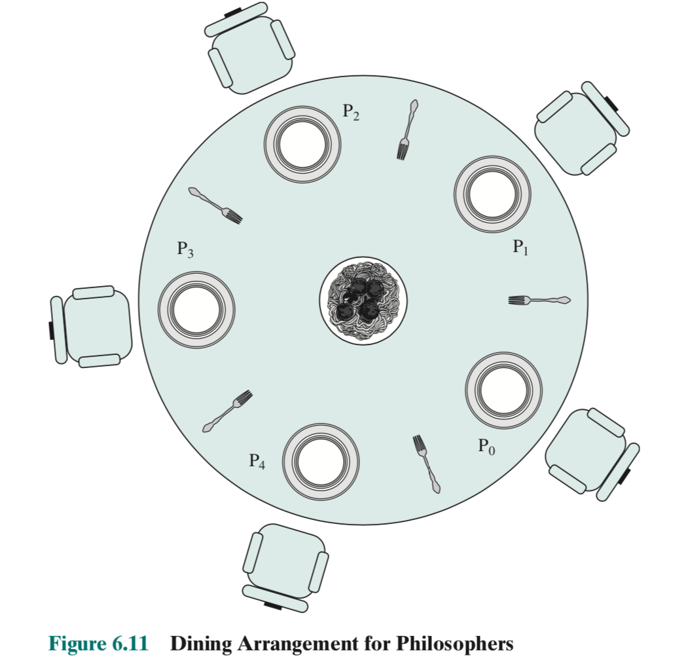

“Philosophers” を Go で解く（問題編）
先日書いた読書感想文の最後の方で「食事する哲学者の問題」を紹介したが，今回から数回に渡ってこの問題を Go で解く記事を書いてみる。
読書会で教えて頂いたテキストは “Philosophers - I never thought philosophy would be so deadly” というのだが，ググっても（フリーで使えそうな）オリジナルっぽい文書が見つからないので，問題について説明するところから始めたいと思う（今回のために多少アレンジしている。あしからず）。
目次
基本ルール
まず，基本のルールについて。
- 円卓に2人以上の哲学者が座っている
- 哲学者は「食べる」→「眠る」→「考える」のローテーションを逐次繰り返す。哲学者間で行動の差異はない
- 「食べる」間は「眠る」「考える」を行わない
- 「眠る」間は「食べる」「考える」を行わない
- 「考える」間は「食べる」「眠る」を行わない
- 円卓の中央には大きなスパゲッティボールがあり，哲学者は食事の際はそれぞれボールからスパゲッティを取って「食べる」
- スパゲッティを取って食べるためのフォークは哲学者の人数分だけあり，各哲学者から見て左右に1本ずつ配置されている
- 「食べる」際はフォークが必ず2本必要。各哲学者は左右にある2本のフォークを取って「食べる」を開始する（他のフォークは使わない）
- フォークを使っている間は他の哲学者は同じフォークを使えない
- 「食べる」が終わったらフォークを戻し，他の哲学者が使えるようにする
- 「食べる」が終わったら「眠る」を開始する。「眠る」は一定時間行う
- 「眠る」が終わったら「考える」を開始する。「考える」は次の「食べる」を開始するまで継続する
- 哲学者はお互いの状態を知らず，コミュニケーションすることもない
- 哲学者は一定時間「食べる」をしないと餓死する
スパゲッティ・フォーク・哲学者の配置を簡単に図示してみる（図は哲学者が5人の場合）。

同じフォークを哲学者同士で使い回すんかい！ とか，スパゲッティの補充はどうするの？ とか生々しい話はいったん考えない。
まぁ，哲学者って 頭おかしい 変わり者が多そうだし（笑）
このルール下で餓死者を出さずに全員が一定回数以上食事を行うにはどうすればいいか，という問いである。 このシミュレーションを Go で組んでみよう，というわけだ。
パラメータおよび終了条件
シミュレーションに必要な各種パラメータを以下に示す。
| シンボル | 型 | 説明 |
|---|---|---|
NumPhilos |
int |
哲学者およびフォークの数（$\ge 2$） |
TimeDie |
int |
餓死するまでの時間（$\gt 0\,\mathrm{ms}$） |
TimeEat |
int |
「食べる」時間（$\gt 0\,\mathrm{ms}$） |
TimeSleep |
int |
「眠る」時間（$\gt 0\,\mathrm{ms}$） |
TimeThink |
int |
「考える」時間（$\ge 0\,\mathrm{ms}$） |
NumEat |
int |
各哲学者が最低限食事を行う回数（$\ge 0$） |
シミュレーションの終了条件は以下の通り：
- 哲学者はシミュレーション開始または食事を開始してから
TimeDieミリ秒以内に次の食事を始めないと餓死する - 哲学者の誰か1人が餓死した場合または全員が
NumEat回以上食事を行った場合はシミュレーションを終了する
その他 注意事項およびヒント
- パラメータを含め，変数をグローバル変数として配置しない
- 以下のイベントに対してログを出力する。タイムスタンプはミリ秒単位
- 哲学者 X がフォークを持った
- 哲学者 X がフォークを戻した
- 哲学者 X が「食べる」を開始した
- 哲学者 X が「寝る」を開始した
- 哲学者 X が「考える」を開始した
- 哲学者 X が餓死した
- シミュレーション部分に関しては Go の標準パッケージのみ使用する
- 哲学者の行動は goroutine による並行処理として実装する
- フォークは哲学者間の共有資源とみなし mutex を使って排他制御を行う2
- スパゲッティは無尽蔵かつ専有不可であるとみなし，排他制御の対象としない
こんなところかな。 さぁ，みんなで考えよう！（続く）
参考図書

- Go言語で学ぶ並行プログラミング 他言語にも適用できる原則とベストプラクティス impress top gearシリーズ
- James Cutajar (著), 柴田 芳樹 (著)
- インプレス 2024-12-04 (Release 2024-12-04)
- Kindle版
- B0DNYMMBBQ (ASIN)
- 評価
読書会のために購入。インプレス社の本は Kindle 版より版元で PDF 版を買うのがオススメ。「並行処理」について原理的な解説から丁寧に書かれている。 Go で解説されているが Go 以外の言語でも応用できる。

- Go言語による並行処理
- Katherine Cox-Buday (著), 山口 能迪 (翻訳)
- オライリージャパン 2018-10-26
- 単行本（ソフトカバー）
- 4873118468 (ASIN), 9784873118468 (EAN), 4873118468 (ISBN)
- 評価

- プログラミング言語Go (ADDISON-WESLEY PROFESSIONAL COMPUTING SERIES)
- Alan A.A. Donovan (著), Brian W. Kernighan (著), 柴田 芳樹 (翻訳)
- 丸善出版 2016-06-20
- 単行本（ソフトカバー）
- 4621300253 (ASIN), 9784621300251 (EAN), 4621300253 (ISBN)
- 評価
著者のひとりは（あの「バイブル」とも呼ばれる）通称 “K&R” の K のほうである。この本は Go 言語の教科書と言ってもいいだろう。と思ったら絶版状態らしい（2025-01 現在）。復刊を望む！

- Go言語 100Tips ありがちなミスを把握し、実装を最適化する impress top gearシリーズ
- Teiva Harsanyi (著), 柴田 芳樹 (著)
- インプレス 2023-08-18 (Release 2023-08-18)
- Kindle版
- B0CFL1DK8Q (ASIN)
- 評価
版元で PDF 版を購入可能。事実上の Effective Go とも言える充実の内容。オリジナルは敢えてタイトルに “tips” という単語を入れるのを避けたのに邦題が「100 Tips」とかなっていて，原作者がお怒りとの噂（あくまで噂）

- Goならわかるシステムプログラミング 第2版
- 渋川よしき (著), ごっちん (イラスト)
- ラムダノート 2022-03-23
- 単行本（ソフトカバー）
- 4908686122 (ASIN), 9784908686122 (EAN), 4908686122 (ISBN)
- 評価
-
Go ランタイムは全ての goroutine が停止するとデッドロックとみなしてプロセスを終了する。なお
Sleep等のタイマーやネットワーク通信などの一時停止状態は除く。 ↩︎ -
Go の標準パッケージでは semaphore は（ユーザが利用できる形では）提供されていない。事実上の準標準パッケージとしては
golang.org/x/sync/semaphoreが重み付きセマフォ（weighted semaphore）として公開されている。 ↩︎